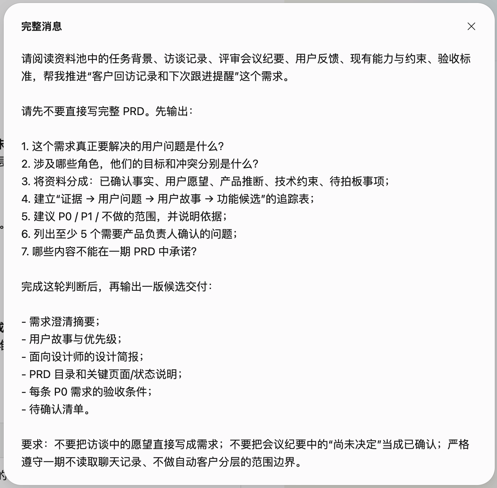
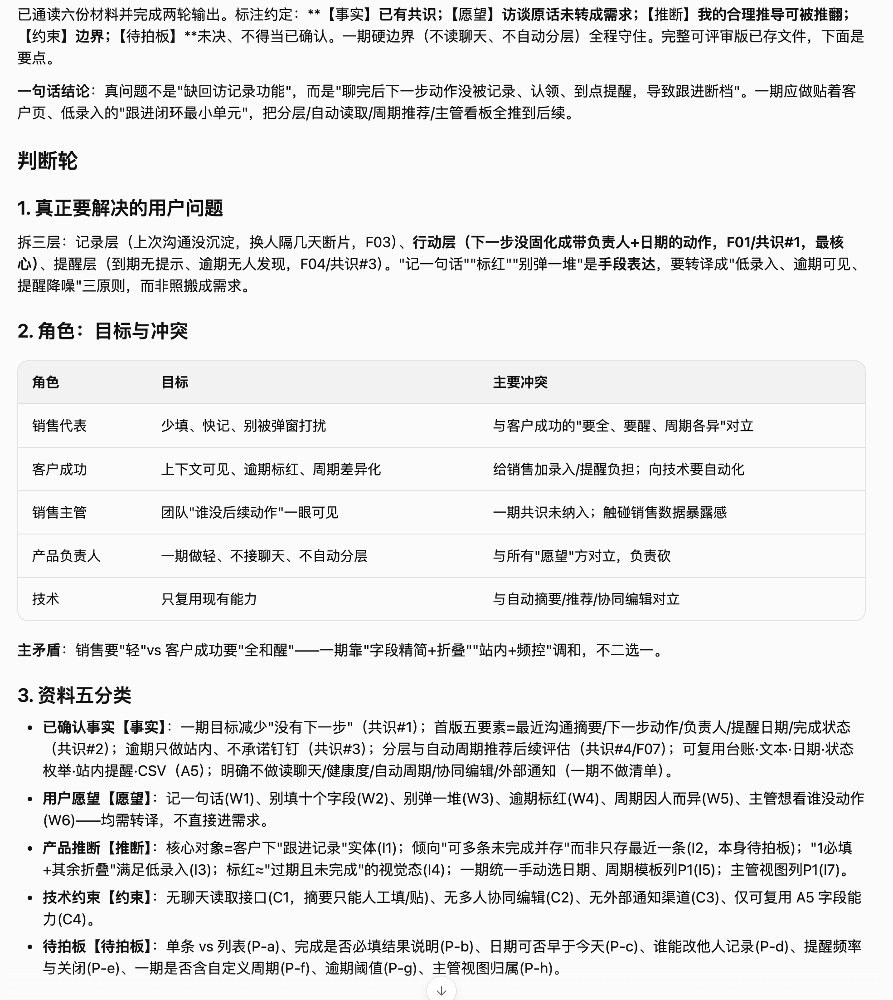
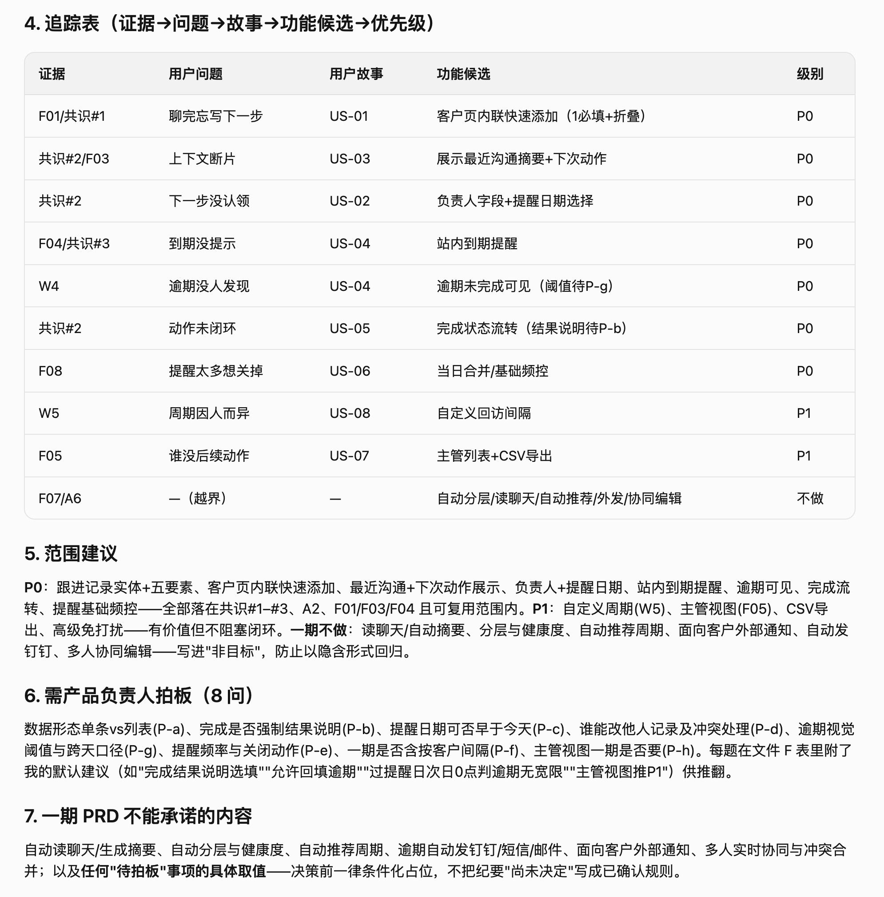
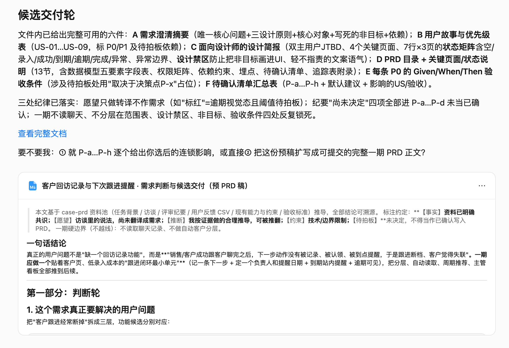
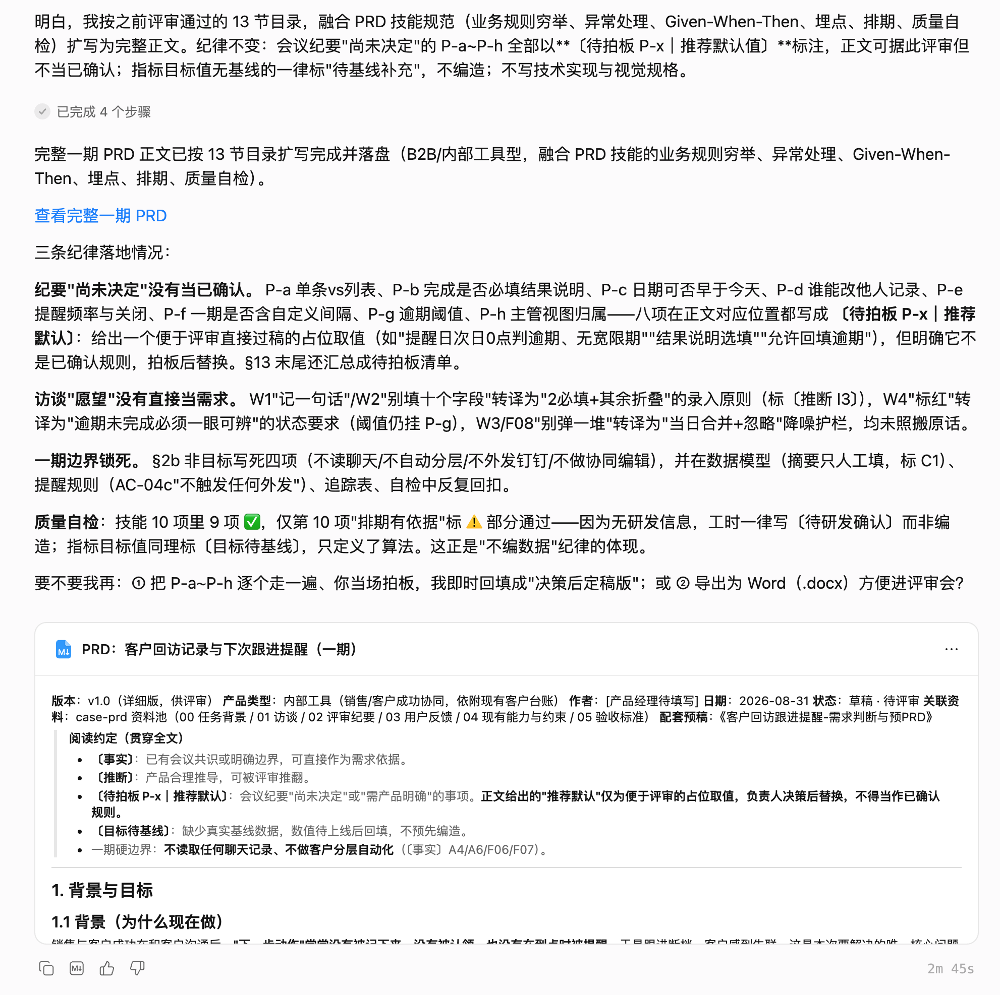
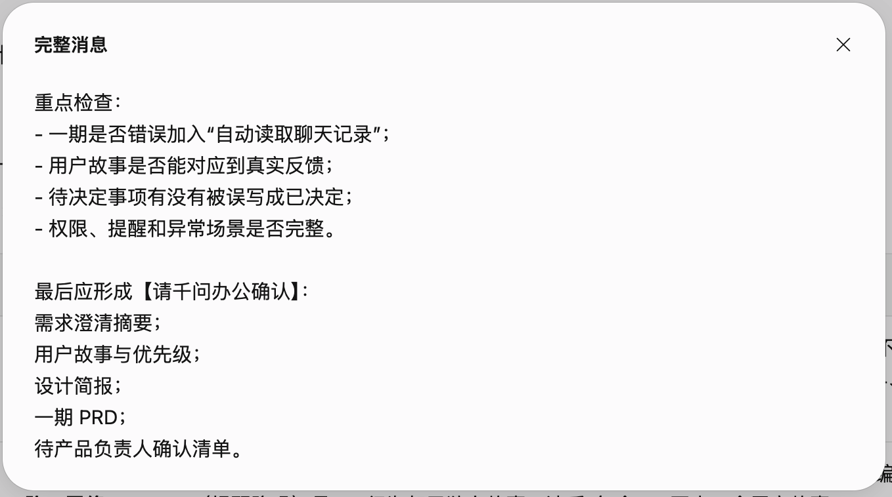
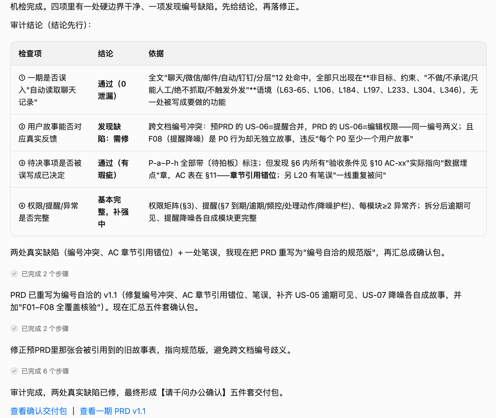
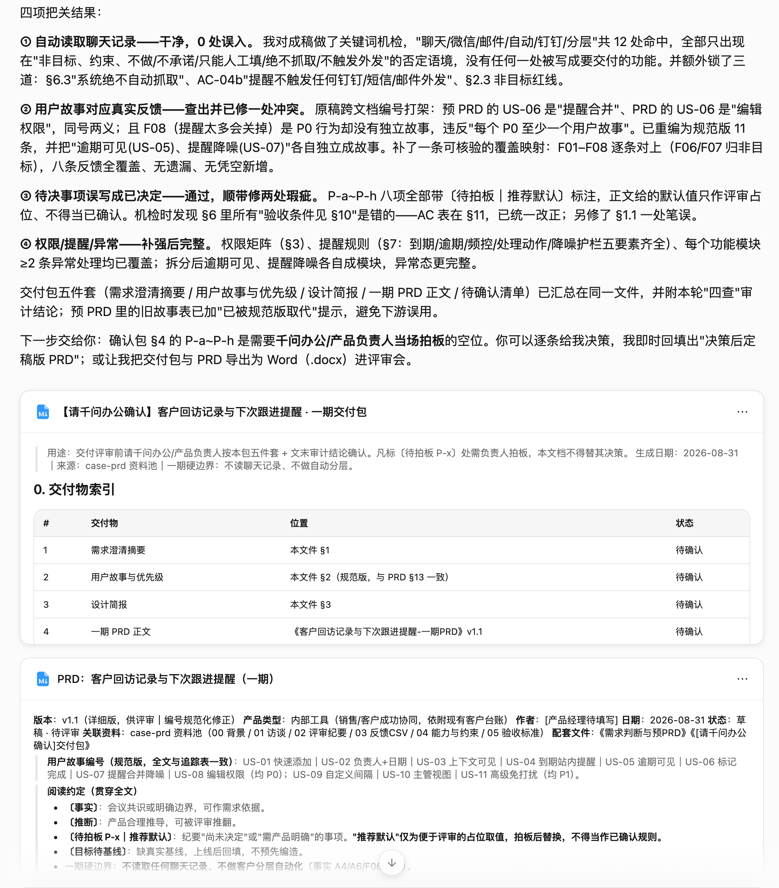

从模糊需求到一期 PRD
先判断真正要解决的工作麻烦，再让 AI 把证据、用户故事、范围和验收条件串成一套可评审的交付。
客户回访之后，如何让“下一步”不再丢掉？
这次任务表面上是“做一个客户回访记录和提醒功能”，但资料真正指向的是另一件事：沟通结束后，下一步动作没有被记录、被认领，也没有在到点时提醒，于是跟进断档。千问先把访谈、反馈、会议共识和技术边界放在一起判断，再生成预 PRD、一期 PRD 和供评审拍板的交付包。
8 张截图，记录一次需求如何被推演成 PRD
证据 01 是第一轮任务指令；证据 02～05 是从任务理解、证据追踪到一期 PRD 的连续输出；证据 06 是二次 Review 指令；证据 07～08 是 AI 检查、修正并整理交付包的结果。原始文件编号保留在链接中，所有截图可点击放大。
第一轮：从资料池到一期 PRD
这一轮先不急着写完整 PRD，而是先判断“真正的问题是什么”“哪些内容能进一期”。
{kind=link}

{kind=link}

{kind=link}

{kind=link}

{kind=link}

第二轮：Review、修正与交付包
第二轮不重新发明需求，而是检查边界有没有越线、用户故事能不能映射、待决策事项有没有被误写成结论。
{kind=link}

{kind=link}

{kind=link}

原始资料如何支撑这次推演
以下 00～05 是本次资料池的组成部分。Markdown 可在当前页面内打开，脱敏反馈 CSV 保留下载入口；06 第一轮指令和全部原始资料也放在页面底部压缩包中。
00 · 任务背景
交代触发任务、工作麻烦、角色和期望交付。当前页阅读
01 · 访谈记录
包含销售、客户成功、产品和技术的真实诉求与边界。当前页阅读
02 · 评审会议纪要
区分已达成共识与尚未决定的事项。当前页阅读
03 · 用户反馈
提供脱敏反馈数据，支持功能候选和优先级判断。下载 CSV
04 · 现有能力与约束
明确一期能复用什么、不能承诺什么。当前页阅读
05 · PRD 验收标准
要求每条核心需求可追溯，P0 有用户故事和可执行验收条件。当前页阅读
实际交付物 · 三份 Markdown 交付
这三份文档分别承担不同角色：预 PRD 解释判断过程，一期 PRD 进入评审正文，交付包把内容、状态和待拍板事项汇总在一起。点击后均在当前页面打开。
人工验收：AI 已经整理好，不代表产品已经拍板
必须由产品负责人确认
跟进记录是单条记录还是客户下的任务列表；是否允许多个未完成任务；提醒频率和关闭方式；完成时是否必须填写结果；提醒日期和编辑权限如何处理。
一期明确不能越过的边界
不读取微信、钉钉或邮件聊天记录；不自动生成摘要；不做客户健康度和客户分层；不自动推荐回访周期；不承诺钉钉等外部通知；不做多人实时协同编辑。
这里的“人工判断”不是再造一张截图，而是确认 AI 标出的决策点；只有 P-a～P-h 被拍板后，一期 PRD 才能进入正式评审或研发排期。
好的 PRD，不是把所有意见写进去
它要把真实麻烦、证据、用户故事、一期边界和验收条件连起来；AI 可以把混乱整理成结构，但什么值得做、什么现在不做，仍然要由产品负责人拍板。
附件 · 00～06 原始资料包
包含本案例的任务背景、访谈记录、评审会议纪要、脱敏用户反馈、现有能力与约束、验收标准和第一轮任务指令。下载后可把同一资料池放入千问办公复现。